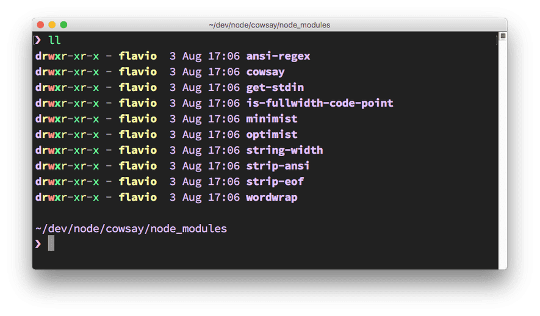
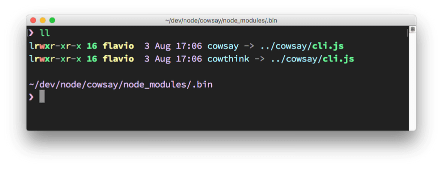
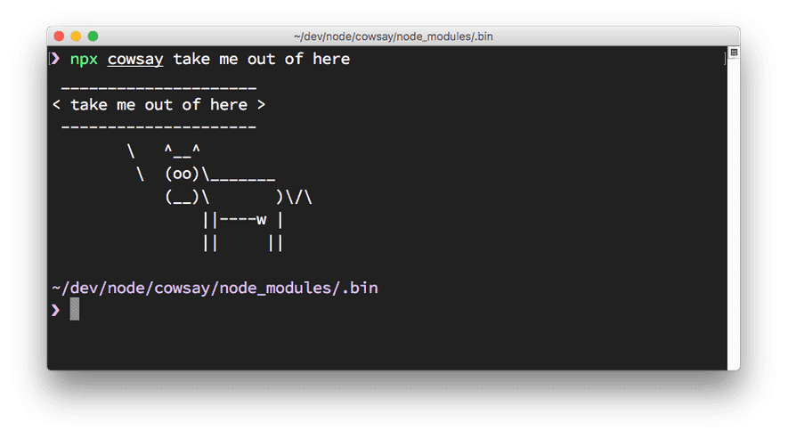

16. Использование пакетов
Как использовать установленный в папку node_modules или глобально пакет?
Скажем, вы установили lodash, популярную вспомогательную JavaScript-библиотеку, с помощью npm install lodash.
Эта команда установит lodash в локальную директорию node_modules.
Для использования в программе пакет сначала нужно импортировать с помощью require:
const _ = require('lodash')
Что если пакет является исполняемым файлом?
В этом случае исполняемый файл будет помещен в каталог node_modules/.bin/.
Это можно продемонстрировать с помощью библиотеки cowsay.
Данный пакет предоставляет программу для командной строки, при выполнении которой корова (и другие животные) что-либо "произносит".
При установке пакета посредством npm install cowsay будет установлен сам пакет и несколько его зависимостей:

Папка .bin является скрытой и содержит символические ссылки на бинарные данные "cowsay":

Как их запустить?
Вы, конечно, можете набрать ./node_modules/.bin/cowsay и все будет работать, но npx, включенный в npm (начиная с версии 5.2), является более подходящим вариантом. Вы просто выполняете npx cowsay и npx определит местонахождения файла автоматически:

Корова говорит: "Забери меня отсюда".